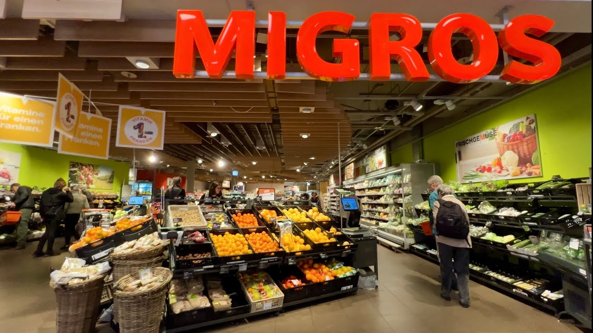
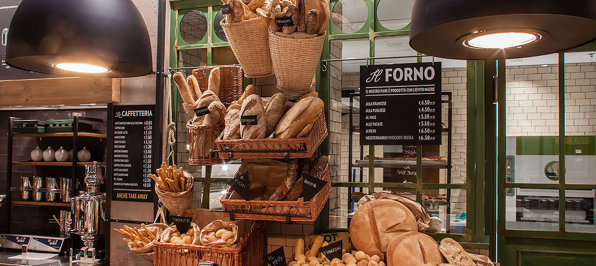
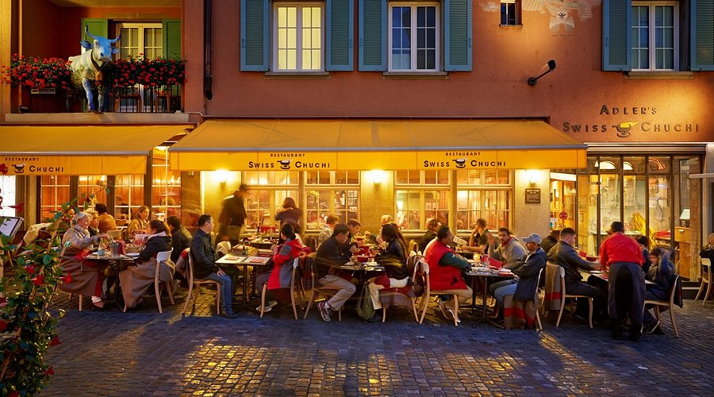

Switzerland is consistently ranked among the most expensive countries in the world. However, with the right strategies, you can experience the very best the country offers without completely emptying your wallet. Here are the best tips for stretching your Swiss Francs.
Getting the Best Value on Transport
- Swiss Travel Pass – If you plan to travel by train, it almost always works out cheaper than buying individual tickets
- Saver Day Pass – A CHF 52 day pass for unlimited travel, available online with advance booking
- Half-Fare Card – CHF 120 for 1 month; halves the price of all tickets — ideal for 2+ week stays
- GA Travelcard – An annual unlimited travel pass (expensive but excellent value for 3+ week stays)
- Guest cards – Many hotels and ski resorts issue guest cards providing free local transport
- City bikes – Free or cheap bike rentals in many Swiss cities (e.g. PubliBike, Züri Velo)
Saving Money on Food

Supermarkets
Migros and Coop are the main supermarket chains. Their in-store restaurants (Migros Restaurant, Coop Restaurant) offer very good hot meals for CHF 8–15 — far cheaper than cafes and restaurants.

Takeaway & Bakeries
Grab sandwiches, pastries, and snacks from bakeries and supermarket deli counters. A sandwich + drink typically costs CHF 8–12.

Lunch Menus
Most Swiss restaurants offer a Mittagsmenu (lunch special) with soup, main course, and sometimes dessert for CHF 15–25 — significantly cheaper than ordering à la carte.
Free Things to Do
- Hiking on thousands of kilometres of marked trails — completely free
- Swimming in lakes at public Badis (lake baths) — often free or CHF 5–8
- Exploring old towns in Bern, Lucerne, Stein am Rhein — free to walk
- Museums on certain days — many Swiss museums have free entry on the first Sunday of the month
- Watching cows being herded to Alpine pastures in spring and autumn
- National Day fireworks on 1 August — spectacular and free
- Christmas markets in December — free to browse
Typical Daily Budgets
| Budget Level | Per Day (CHF) | Strategy |
|---|---|---|
| Backpacker | 80–120 | Hostel, supermarket food, Swiss Travel Pass, free activities |
| Mid-range | 180–280 | 3-star hotel, lunch specials, one restaurant dinner, some paid attractions |
| Comfort | 300–450 | 4-star hotel, restaurants, mountain excursions, museum entry |
| Luxury | 600+ | Grand hotels, fine dining, private transfers, premium activities |
💡 Top Money-Saving Hack
Stay in smaller towns or villages rather than major city centres. A hotel in Interlaken, Grindelwald, or Thun costs 30–50% less than equivalent accommodation in Zurich or Geneva — and you're often closer to the scenery you came to see!